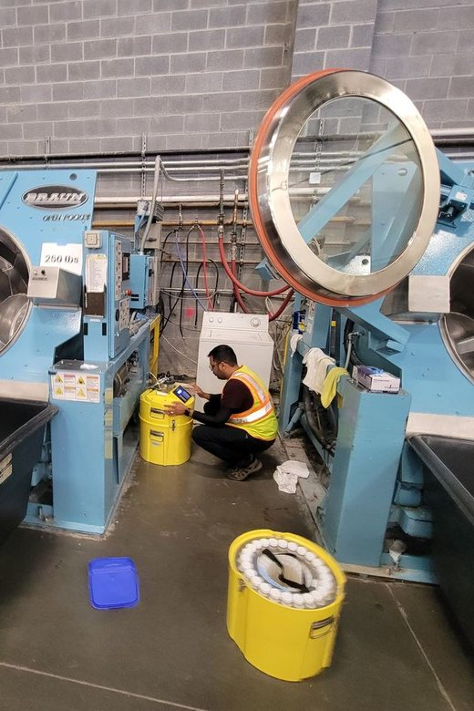
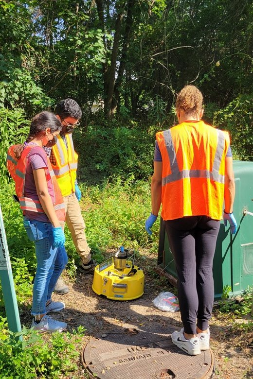
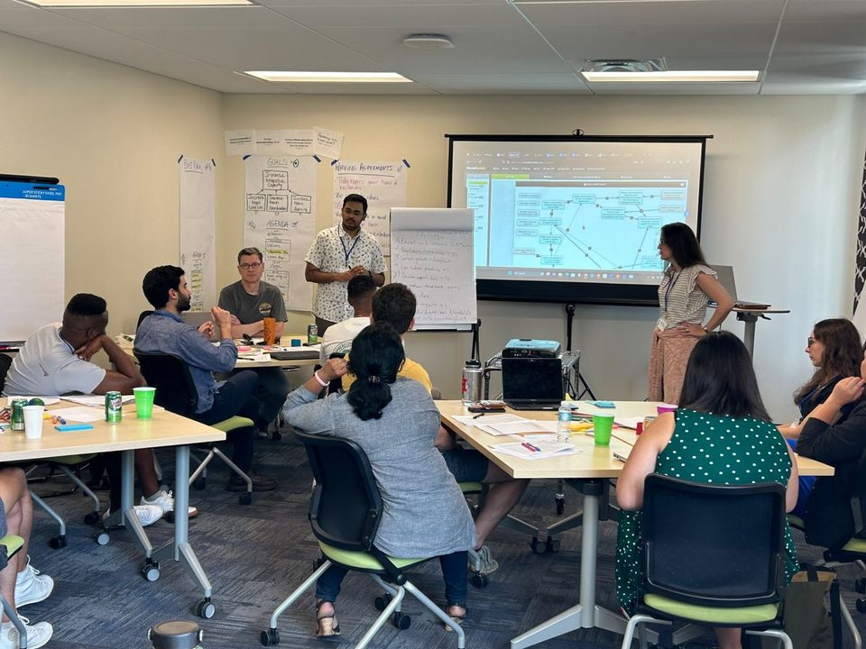
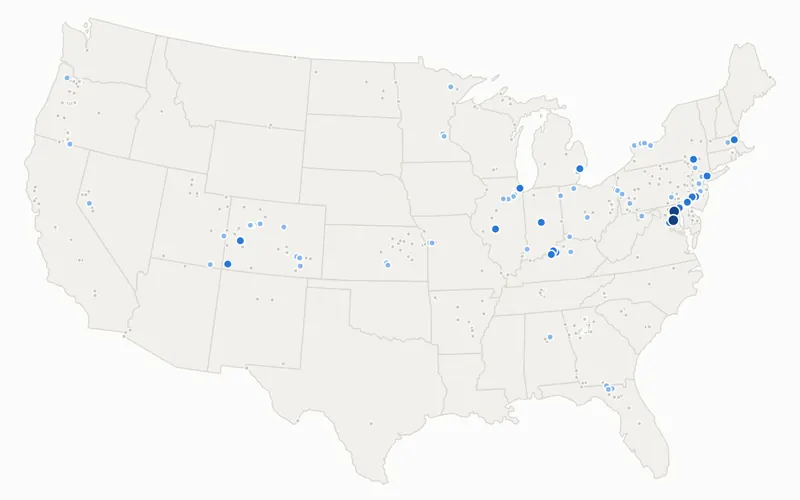
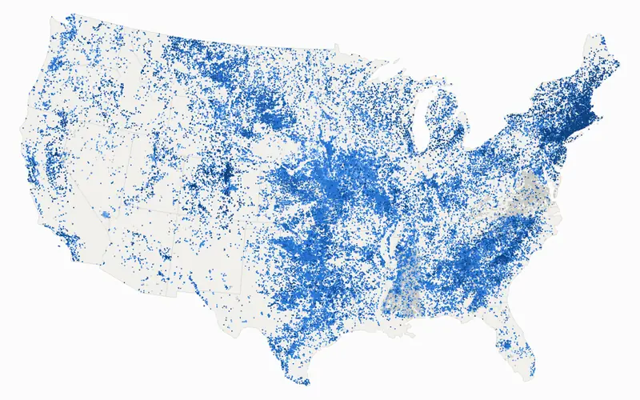

Shantanu Bhide, PhD, EIT. Water resources engineer and researcher.
I build models and decision tools that show utilities, agencies and investors how water quality, flood and dam risk, and infrastructure choices will play out over decades, before the money is spent.
See the problems I solveGet in touch


Live maps I build on my own time from public data, for anyone curious about the water around them. Free to explore and share.

Which U.S. streams run salty after snow and road salting, from USGS sensors. Replay last winter, zoom to your state and see the biggest salt storms.
Open the tracker →
Every dam in the National Inventory of Dams: when it was built, how old the nation’s dams are getting, which ones are high-hazard, and the ones that have been removed.
Explore the dams →The questions below are the ones I’m asked most, with the methods I use and the work that backs them up.
Transit-time models trace contaminants from their sources through watersheds, reservoirs and treatment, then test fixes against climate and growth scenarios through 2100.Evidence: Occoquan One Water decision tools; Water Research, 2025 and 2026
Source attribution built on long monitoring records and statistics. Reclaimed water dominated sodium loads in dry periods, and powder laundry detergents were a dominant household source of salt.Evidence: Nature Sustainability, 2021; sewershed salt source study; detergent study under review
Scenario tools built on more than 500 GB of climate projections that let planners change land use, population and climate assumptions in real time, in the room.Evidence: used live in two stakeholder settings, a regional committee meeting with 40+ participants and NSF-funded focus groups with 30+
Hydrologic and hydraulic modeling for flood hazard, probable maximum precipitation, spillway and outlet-works evaluation, dam removal and reservoir risk.Evidence: practicing engineer in the Dams and Levees group at Geosyntec
Side-by-side comparison of treatment and infrastructure options, with design parameters and cost estimates: nitrogen removal at a wastewater plant, drinking water treatment trains, reservoir water quality, and stormwater practices that handle road salt.Evidence: design projects at Virginia Tech; deicer transport study
Participatory models, workshops and focus groups that put one shared tool in front of decision-makers, grounded in common pool resource theory and training in science policy.Evidence: NSF-funded convergence research; workshops with elected officials, NGOs and developers
Methods and results that others have reviewed, funded and used.
14 published papers in journals including Nature Sustainability, Water Research, Environmental Science & Technology, Nature Reviews Earth & Environment and Communications Earth & Environment. One more is accepted at Nature Water and five manuscripts are under review. See the full list.
Research supported by the National Science Foundation and the Water Research Foundation, including a Co-PI role on an NSF planning grant and researcher roles on two Water Research Foundation projects, among them the $679,000 OnePFAS project.
Two decision tools used live in stakeholder settings: a regional committee meeting with more than 40 participants, and NSF-funded focus groups with more than 30 stakeholders from utilities, regulators, local governments and NGOs. Also a science partnership with the Metropolitan Washington Council of Governments.
Scholarships from the AWWA Virginia Section and the Virginia Water Environment Association, and the Thomas J. Grizzard Jr. Graduate Fellowship.
PhD in Civil Engineering, MS in Environmental Engineering and a diploma in Science Policy, all from Virginia Tech. Engineer in Training (EIT).
I apply the same rigor to dam safety and flood hazard work at Geosyntec, including probable maximum precipitation and rain-on-snow analyses.
Five projects, each framed as a problem, an approach and a result.
The problem. A drinking water reservoir fed by treated wastewater and a growing watershed faced rising sodium and emerging contaminants such as PFAS, with many agencies and no shared way to test fixes.
What I did. Built two interactive models for stakeholder meetings: a long-term futures model that carries sodium through the watershed, reservoir and drinking water intake using transit times, and a water-balance model for stress-testing supply.
What it enabled. Exploring 26,244 possible futures through 2100 in a live meeting, and testing supply under drought, growth and reclaimed water limits. The approach is built to extend to PFAS.Read the case study and try the interactive models
The problem. Treated wastewater is a major sodium source for a drinking water reservoir, but it was not clear how much salt comes from households, industries, data centers, the drinking water supply and groundwater leaking into sewers.
What I did. Designed and ran intensive monitoring campaigns across jurisdictions, from a neighborhood of about 1,000 people to a sewershed serving roughly 350,000, and used flow and concentration data to split sodium loads among those sources.
What it enabled. A transferable way to benchmark per-capita sodium generation and to prioritize interventions such as pretreatment, discharge controls and social marketing. Results are preliminary.
The problem. Treated wastewater supplies a drinking water reservoir that is getting saltier.
What I did. Applied copula-based probability analysis to 25 years of monitoring data.
What it showed. Reclaimed water dominates salt loading in dry periods, which shapes treatment alternatives and regional water security planning.
The problem. Stormwater practices meant to protect streams can pass road salt downstream.
What I did. Built a hydrologic and transit-time model on more than 20 years of hourly climate data.
What it showed. Unintended consequences of current designs, and modifications that capture first-flush deicers.
The problem. Groundwater infiltration into sewers is hard to measure.
What I did. Measured air-phase radon in manholes and built a model to estimate infiltration.
What it showed. Radon above the EPA indoor criterion and a strong daily pattern that could guide safer timing for maintenance crews.
I’m open to conversations and collaborations. This is where I can contribute.
Scenario tools and source-attribution studies for PFAS, salinity and nutrient planning, and modeling that supports treatment and capital decisions.
Hydrologic, hydraulic and water quality modeling, and research-grade methods turned into practical workflows.
Technical grounding on the water quality, regulatory, flood and climate risks that affect infrastructure assets and long-term investment decisions.
Joint work on transit-time modeling, salinization, PFAS and participatory modeling.
Today I’m a water resources engineer in Geosyntec’s Dams and Levees group, working on flood hazard, dam safety and reservoir risk. Before that I spent more than six years at Virginia Tech’s Occoquan Watershed Monitoring Laboratory, working with utilities, agencies and local governments on the Occoquan One Water system in Northern Virginia. I remain active in research.
Water Resources Engineer, 2026 to present. Hydrologic and hydraulic modeling, dam and levee safety, flood hazard studies, spillway and outlet-works design.
Postdoctoral Associate (2024 to 2026) and Graduate Research Associate (2019 to 2023). Science and Technology Policy Fellow (2021 to 2022).
Intern, 2018. Designed sewer networks and a 34 MGD wastewater treatment plant.
HEC-HMS, HEC-RAS, SWMM, SWAT, MODFLOW, Delft3D, BioWin, ArcGIS Pro, QGIS, Python, R, MATLAB.
Transit time modeling framework for predicting freshwater salinization in urban catchments. Water Research. Bhide and Grant, co-first authors.
Social-ecological-technological drivers of freshwater salinization in the Occoquan Reservoir, United States. Communications Earth & Environment. Grant and Bhide, co-first authors.
Transit times link pollution sources to drinking water quality in a One Water system. Water Research. Bhide and Grant, co-first authors.
Ion clusters reveal the sources, impacts, and drivers of freshwater salinization. Marin et al. Environmental Science & Technology.
Addressing the contribution of indirect potable reuse to inland freshwater salinization. Bhide et al. Nature Sustainability.